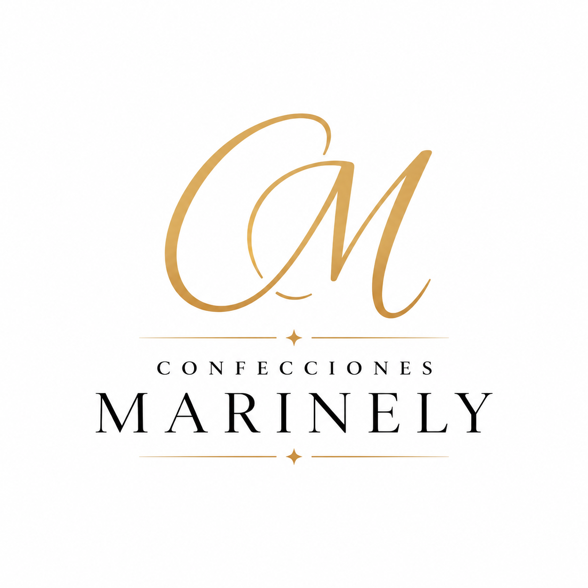
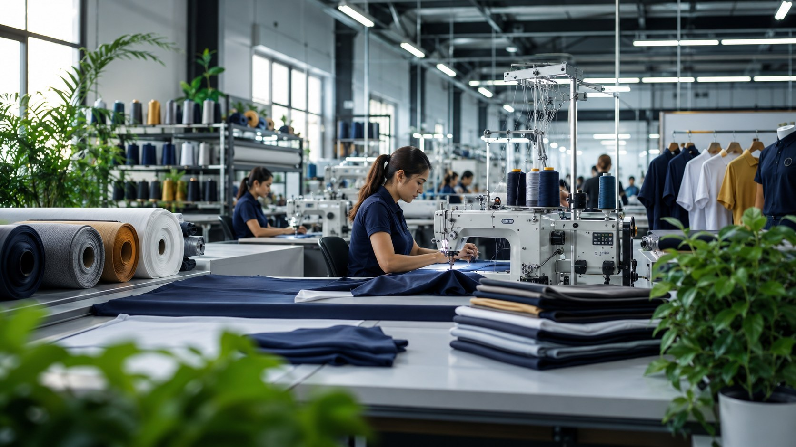
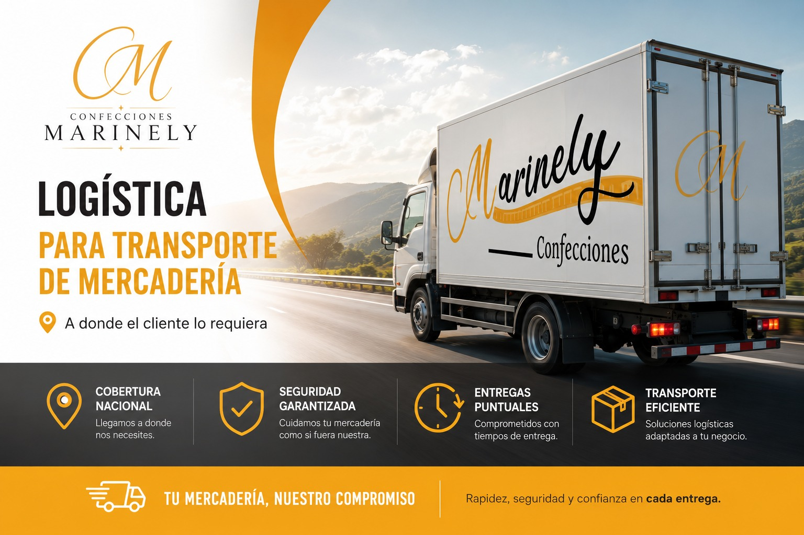

Uniformes empresariales
Camisas, pantalones, blusas, gabachas, playeras tipo polo y prendas corporativas.

Confeccionamos todo tipo de ropa y productos en tela para empresas, industrias, colegios y comercios, trabajando con marcas reconocidas del comercio guatemalteco e internacional.
Camisas, pantalones, blusas, gabachas, playeras tipo polo y prendas corporativas.
Ropa de trabajo resistente, funcional y cómoda para operación diaria.
Prendas escolares con acabados profesionales y tallas según necesidad.
Confección de bolsas, accesorios, textiles personalizados y soluciones especiales.
Pachones, mochilas, tazas, lapiceros y artículos para campañas de marca.
Producción adaptada a diseños, cantidades, colores y requerimientos del cliente.

Promovemos prácticas responsables en la selección de materiales, uso eficiente de recursos y confección consciente, buscando reducir desperdicios y entregar productos duraderos.
Coordinamos entregas para que sus uniformes, telas y productos lleguen de forma segura y puntual.
